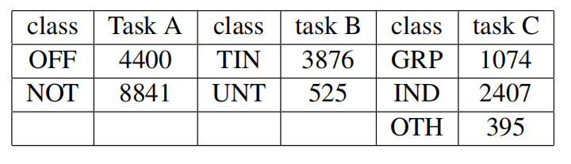
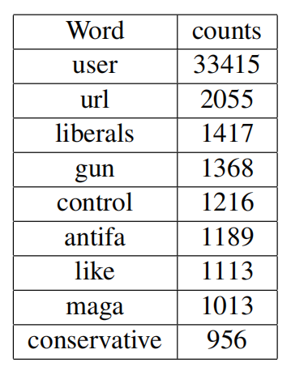
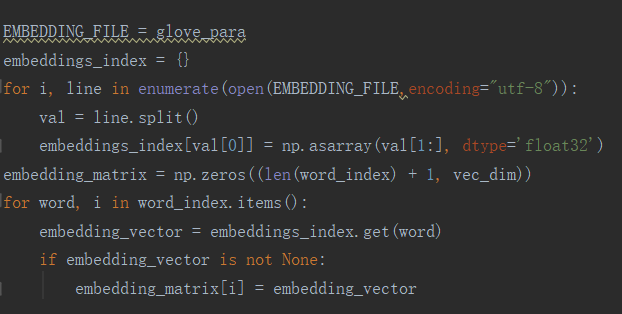
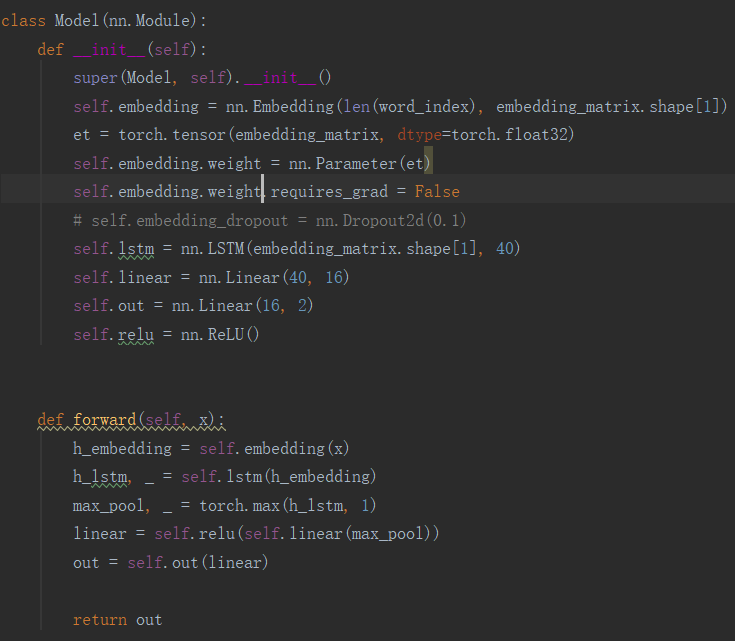
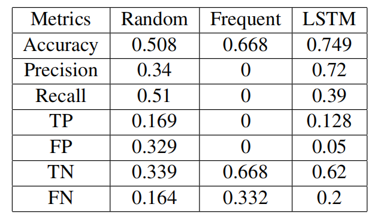
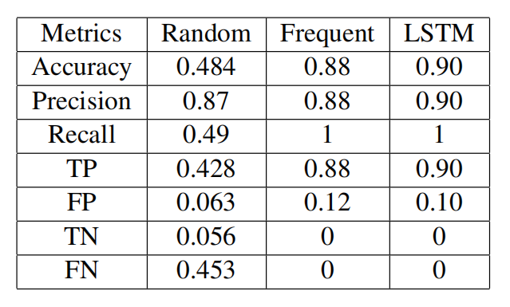
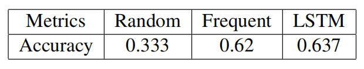

Nowadays, social media is an essential part of our daily life. Everyday, we browse through
Twitter, Facebook, Instagram and Reddit, acquiring entertainment gossip, international
events, and sports news. We expresss ourselves and exchange with others in this virtual
world, broadening our horizons and make joy. However, website is also a place full
of malice, anger and bias. Anonymous environment allows some people to attack on others
unscrupulously. Such offense texts not only spoil one's good mood, but even worse,
spreads discrimination and hatred towards individuals or vulnerable groups, and leads
to breaking of social harmony and happiness.
Offense detection has been an overlasting topics in Natural Language Processing.
Due to hundreds of thousands of information in the internet, manual check is
obviously unrealistic. That's where Artificial Intelligence shows its power. Thanks to the power
of word to vector embedding, and memory mantaining neural network LSTM, today,
we are gonna solve the problems in the most effective way.
Data
The dataset we use is OLID-training dataset from OffensEval 2020.
This dataset contains 13241 tweets, each has 3 labels,
representing whether it is offensive, it is tageted offensive,
and what is it targeted at, which corresponds to
task A, B and C of this research. Following Table
shows distribution of labels for each task in the dataset.

There is also another table shows the most common words
in tweets

Methods
To convert text features into numeric, we perform
the method of Glove from Stanford
to calculate embedding for each word. The word vector
dimension is set as 25. The code is as following.

I use a Recurrent Neural Network to do the classification
work on the texts. The netowrk is a 4 layers structure.
The first layer is the embedding layer. The second layer
is LSTM layer with input size 25 and output size 40.
The third layer is linear layer, with input size 40,
output size 16, and activation function ReLU. The final
layer is output layer, with input size 16 and output size 2.
The input to this network is the word, while the output
are 2 nodes, each represents one class.

Results and Discussions
The classification performance for Task A, whether the tweet
is offensive, is as Following

The classification performance for Task B, whether the
offensive tweet is targeted at something, is as following

The classification result for Task C, what the offensive
tweet is targeted at, has following performance

In above results, we can see peormance of both 2 baselines
and LSTM model. We can see that LSTM outperform
the previous in most tasks. In task B, LSTM model
has a execellent high accuracy of 90%. However,
in Task A and C, LSTM model only has 75% and 63%,
not very advantageous compared to baselines. There
is still a large space of improvement, especially
in word to vector strategy and network structure.
However, generally the performance of LSTM model
is good and acceptable.
What's Next
In my approach, I solve the 3 tasks with independent
models, but we can clearly observe connection within
them. A more ambitious stratgy is to solve all the
tasks with single model. We can try link each model
with modifiable weights, and update them together
in each iteration. Such research may reveal more
internal discipline in offense detection.